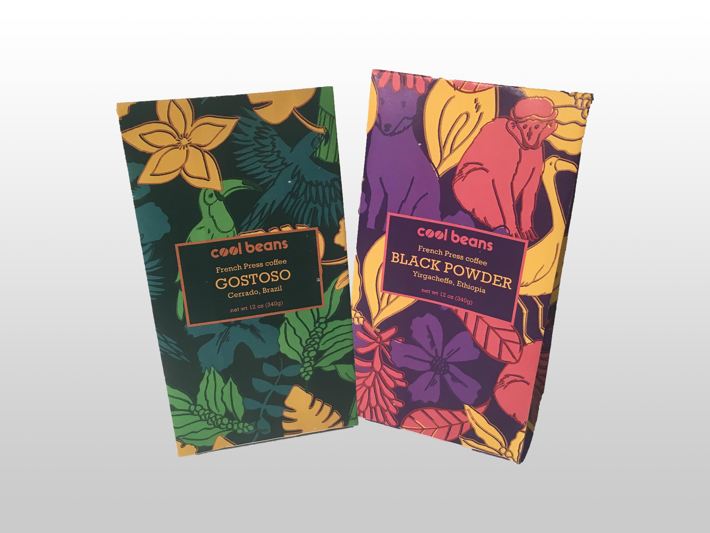
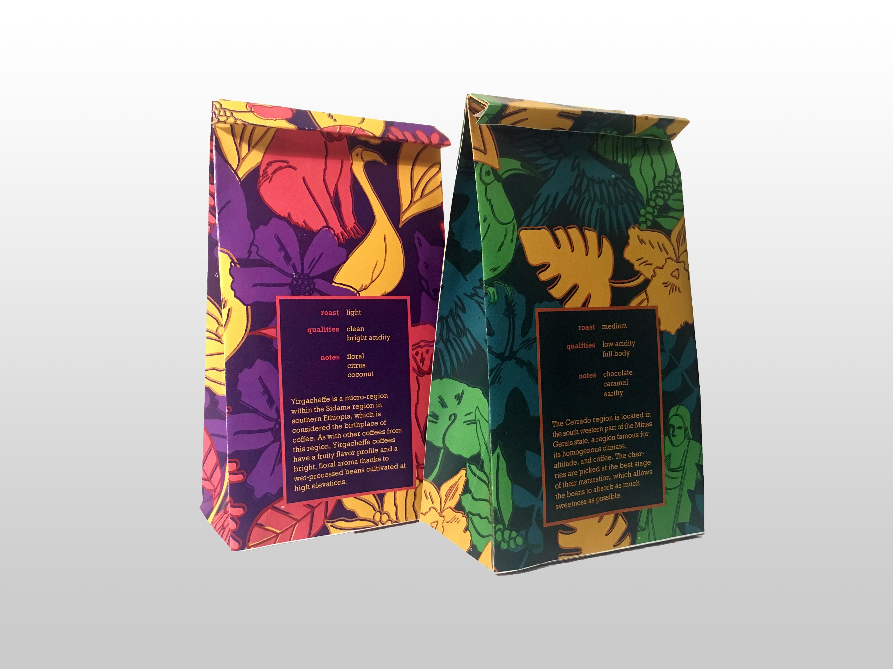

Brand Position and Brand Identity
We were challenged with creating a brand from a personal interest. From there, we defined the brand position, key adjectives, and a mission statement. We then designed the visual identity of the brand around those guidelines.
For the first phase of the project, we compiled market research based on existing related companies. After creating several brand matrices, we identified weak areas. For Cool Beans, identifying a market of younger people who are interested in coffee but not as invested in the nuances of flavors was key. Cool Beans represents people who don't believe in coffee snobbery but want to spread a love and knowledge of the drink.

Logo | Cool Beans is a coffee subscriptioin service that emphasizes accessibility, simplicity, and the importance of the origin of the coffee beans. The logo is fun, and the O's evoke stencil type on shipping crates as well as coffee beans.
 Packaging | The packaging design was based on the two origins of the coffee beans. The patterns focus on natural elements and bright, inviting colors. The language of the text is simple but informative.


Brewing guide | In the first package, each subscriber would recieve a small booklet on how to brew drip and French Press coffee. The illustrations inside and simple language proves that coffee doesn't have to be complicated or exclusive.
Process book here.